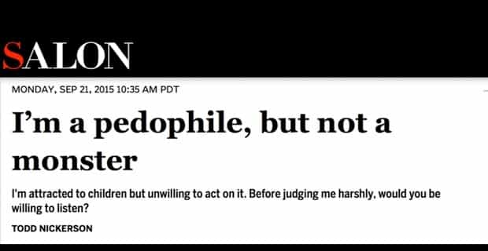

< < < Back
4 Ways National Geographic Is Furthering A Degenerate Leftist Narrative – Return Of Kings
The new Current Year is just around the corner and seeing that their tricks used to achieve global mind domination amounted to a resounding fiasco (with elements such as the recent American presidential election and its glorious mountains of salty tears), the evil leftist elves have been working around the clock in their New World Order workshop.
The last present that they will put under the Cultural Christmas tree is the January 2017 issue of National Geographic Magazine with its cover page featuring a 9-year-old boy dressed as a little girl, posing in a provocative, clearly sexualised manner. The January edition also directly pushes the idea of a supposed “Gender Revolution” taking place and attacks the very pillars of masculinity among others.
Is it still a neutral magazine about Earth and good pictures?
The original focus of the magazine, geography (human or natural), has clearly been abandoned and since the 2000s, it has adopted a more political and activist stance.
With the nomination of Gary Knell (former CEO of Sesame Workshop) as the CEO of the National Geographic Society and of Susan Goldberg as editor in chief of National Geographic magazine, the now 100% Jewish-controlled National Geographic network is ready to promote usual globalist narratives, like in their recent edition entitled “the New Europeans,” openly defecating on millennia of European cultural heritage, in a giant “Fuck you dad!” move, that would have made Angela Merkel proud.

The degeneracy of pedophilia is now depicted as a new normal

Mainstream media’s total denial of life’s proven facts and basic human knowledge does not really come as a surprise. We have grown accustomed to the systematic degeneracy of the left for a while now.
But here, Nat Geo is testing the waters, gauging the reaction of the public by making a direct endorsement of the fable of “transgenderism,” declaring that if children can choose their sexual identity, they are also fair game for being seen as responsible sexual beings. Hence the open sexualisation of their image for pushing even more boundaries.
This “transgender child” is simply a lost boy in drag with virtue-signalling liberal parents that should be charged for child abuse. The boy can be seen sporting pink hair, entirely dressed in tight pink clothing and striking a lascivious pose in an armchair, his hand resting on his crotch as if he was caressing it. These sick minds cross a line by using innocent children as props.
I would not be surprised if I discover one day that Goldberg is a close friend of the Podestas or as spent a few afternoons enjoying some chicken at Comet Ping Pong.
Here is why a boycott is necessary. Exposing their madness and schemes is useful, but as the previous blows delivered to degenerate firms show it, depriving them of their shekels is by far the most effective weapon.
1. Altering reality by manipulating their subjects
Have a look at the video associated with the article “Children Explain How Gender Affects Their Lives”.
After hearing “Avery,” one wonders which kind of 9 year-old child uses this kind of sentence:
Before I transitioned, I was just pretending to be a boy, but now I am a girl and I am a lot happier. (00.32)
After more than two decades studying English, I have never heard this expression being used until the recent years, let alone in the context of a make-believe sexual reversal. Nat Geo has been caught numerous time manipulating information, apologised then did it again. This confused boy did not choose this lascivious, sexualised pose on his own.
The photographers directed him, in order to represent him as a sexual being, able to choose his gender so technically allowing him to have sex with whomever he fancies and something tells me they want him to choose adults.
So why not alter the subjects they interview too and coach children with malleable minds into saying what the bosses want them to?
Funny how around 00.52, one of the only things that the little American girl has to say about gender is:
It kind of bothers me how there is not one girl president
The only reason the foreign kids can’t be influenced and make sense when they talk is probably because the interviewer can’t coach them, not knowing their language or their more traditional parents might be standing in the corner with a watchful eye.

But props to that Kenyan shitlord-in-training for spreading the red pill

Right you are, my brother. Right, you are…
In an outstanding display of courage, National Geographic has disabled the comments on this particular video.
2. Forfeiting neutrality to promote the agenda of their masters

Editor-in-chief Susan Goldberg (second from the right) and the manlet in the middle is Richard Bacon. We’ll come back to him later.
Since Goldberg has been its editor, the magazine has taken a completely different path, transitioning from a paper bringing neutral views of the natural world to a platform for the leftist narrative.
Goldberg has answered the critics since the outrage of the “Gender Revolution” issue :
Today, we’re not only talking about gender roles for boys and girls—we’re talking about our evolving understanding of people on the gender spectrum.
The portraits of all the children are beautiful. We especially loved the portrait of Avery—strong and proud. We thought that, in a glance, she summed up the concept of “Gender Revolution.”
Referring to the utter outrage of normal, functional people, Goldberg asserts:
These comments are a small part of the profound discussion going on right now about gender.
So pushing for cultural collapse is more important than the opinion of the readers. Hence the need to strike them where it hurts. By cutting their funding.
Robin Marantz Henig writes that we are surrounded by “evolving notions about what it means to be a woman or a man and the meanings of transgender, cisgender, gender nonconforming, genderqueer, agender, or any of the more than 50 terms Facebook offers users for their profiles.

Robin Marantz Henig. This woman is the author of the article and will educate you on what gender is and is not. The point of reference that she uses to describe the biological definition of gender is Facebook.
Commenting on the cover boy, Goldberg continues:
She has lived as an openly transgender girl since age five, and she captured the complexity of the conversation around gender
This confused child under ten has been saying that he is a girl for four years so according to the editor, he learnt all he needs to know about sex and the fabricated notion of gender. We must now copy his behaviour and respect his words as if they were the Gospel.

The absurdity of this article would be laughable if we did not know that the motivations behind it are extremely serious. The rupture between these maniacs and reality is total.
3. Defining masculinity and traditional sex roles as evil
In addition of promoting mental abuse on children, Chip Brown penned one of the main articles ” The Many Ways Society Makes A Man” for Nat Geo which directly attacks the very idea of masculinity, by depicting it as inherently evil, associated with pedophiliac practices or mutilating children’s genitalia.
Chip Brown, former word-soup rat for Bezos’ personal megaphone, the Washington Post, and low-testosterone pedoface tells you what masculinity is.

Chip also admires radical lesbian and rabid Anti-Russian Jew Masha Gessen, long walks on the beach and sharing photos of naked African children being circumcised
80% of the article describes his week staring at Sub-Saharan pre-teen male sexual organs being sawed off or pondering on how bad of a beta role model he is for his teenage son back home, leaving that parenting role to theater plays at the school teaching him about rape culture (“muh feelz”).
The rest of the piece brings nothing in essence as he spends his time regurgitating all the buzzwords and themes dear to the backers of the Western Cultural collapse (“muh fatkz”). All you have to know about that author (speaking about his relationship with his son, Oliver) is written here (emphasis mine):
Oliver cannot rely on the traditional roles of men and women for an idea of what it means to be a man.(…)There’s nothing startling or unorthodox to him about female cops or male nurses or about a father who stayed home microwaving stockpiles of breast milk while mom went to an office as the prime provider. Oliver’s mom still outearns me and, by the way, has amassed a vastly larger number of Instagram followers. (…) I see him casting about for what it means, looking askance at the example I set because, as he says, “you cross your legs like a girl.”
What about you being a present, masculine father instead of choosing Instagram filters? Put down the whip, cuck, we got it.
He crosses his legs ankle to knee. (..) For his 15th birthday, he asked for a suit
Dad’s cucked to the marrow. The kid might redeem the soiled family name.
Forget about masculinity being defined by a myriad of traits such as game, loyalty, entrepreneurship or courage. You got it all wrong. Nat Geo tells you it’s all about crime, bullying and mutilating some little boy’s peepee.
4. Ignoring the importance of expertise

After seeing the National Geographic articles as a child, I assumed that the columns were being written by explorers, biologists, mountaineers. Men that knew the subject that they wrote about. Not some dyke or low-T cuck that never ventured out of Shoreditch, who shows you a picture of a colourful paradise bird and comments: “Look at at that fabulous bird. But you know what really sucks? Transphobia!”
Speaking of which, Nat Geo has found another Cultural Marxist muse in the person of liberast (a man guilty of political faggotry) Richard Bacon. Obviously, he has no scientific or academic background to justify his salary.

Richard Bacon and… oh look who is the bestie! Suspected closeted homo and compulsive liar Reggie Yates!

Like his namesake, Bacon is also a delicious source of salt.
Narcotics enthusiast and frail-manlet-playing-tough Richard, who probably lives in a gated 98% White community, will explain you why it is amazing to have more refugees in your country and that Bill Clinton’s idea to move droves of refugees in abandoned houses in Detroit seems like an swell idea.

The picture would not be complete without him using 80% of his time on Twitter calling Donald Trump a bigot, religiously retweeting the Hill, that old post-menopause woman Michael Moore or token feelz merchant Trevor Noah.
Commissioned by his bosses, he also tries to shame countries that keep traditional gender roles and refuse to surrender their land to the Narrative with a trademark beta boy snark. He qualifies what he calls ” gender camps” in Russia, that teach men how to fight and women how to be exemplary hostesses, a factory of “cavemen” and “properly submissive home makers” respectively.
For Nat Geo, The Nazi Azov training camp for children is “double plus good masculine” as it is Western-backed, but a Russian camp applying the same methods of promoting traditional gender roles is guilty of thoughtcrime.
All of that because Russia never “had a proper Civil Rights Movement” or because Putin is a masculine barbarian that urinates standing.
Hors de ma vue, bande de tordus

Huffpost, Daily Beast, Washington Post and other leftist personal blogs are already creaming themselves over that overt provocation. That should be a tell sign.
Boycotting has been shown to be an effective tool recently with the #DumpKellogs campaign launched by Breitbart after Kellogs cancelled their advertisement contract with Breitbart, as it conflicted with their interests, them being a financial supporter for homeland terrorist movement and Soros’ lovechild Black Lives Matters.
Let’s keep exposing their lies and dump our National Geographic copies and cancel our subscriptions to their channels. Add it to the black list of controlled media and find a neutral concurrent with amazing documentaries to give your dollars to.
PS: Someone please ask them on Twitter why they don’t hire Todd Nickerson as a future reporter.
Read More: 5 People That National Review Hates More Than Admitted Pedophile Todd Nickerson